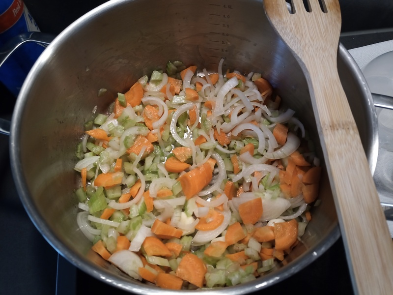
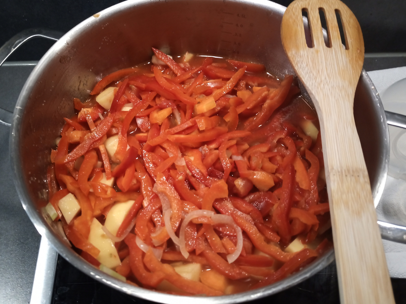

Ingredients
For four portion, you will need:
- 2/3 onions
- 2/3 garlic cloves
- 2/3 stems of celery
- 2 carrots
- 4 bell peppers (any color will do, we do not discriminate)
- A can of tomato paste (something like Mutti)
- 3/4 potatoes
Preparation
You need a large tall pot for this recipe.
- Make a soffritto with the onions, celery, carrots and garlic. I keep the garlic whole, but you may prefer it sliced

- Chop the bell peppers and add them to the pot - I like to chop them in long slices, but any shape will do
- Peel and cut the potatoes in small pieces and add them to the pot
- Add the tomato paste
- Add water until the level reaches just below the other ingredients

- Once it boils, cover the pot with a lid and let it simmer at low heat for around 40 minutes
- Left the lid and let it simmer for another 20 minutes to reduce it
A small amount of olive oil at cold before serving is a nice final touch.